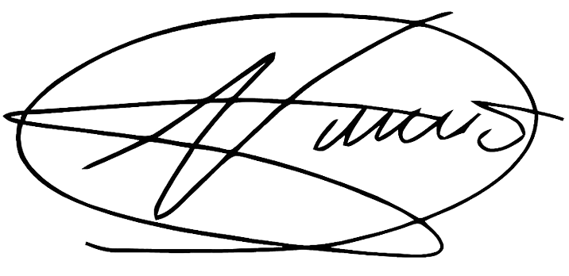
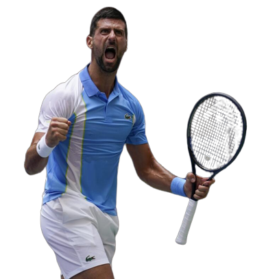
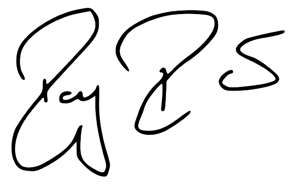
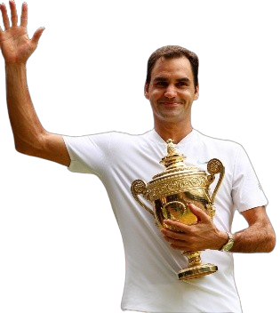

NOVAK DJOKOVIC
- Nació el 22 de mayo de 1987 en Belgrado, Serbia
- Tenista con más semanas como número 1 de la ATP con 373 y aumentando
- Primer tenista en ganar un torneo Grand Slam en 3 décadas diferentes (2000,2010,2020)
- Máxima cantidad de puntos logrados en una misma temporada
- Tenista que más veces ha ganado el Australian Open en toda la historia
- Tenista que más veces ha ganado un Grand Slam


ROGER FEDERER
- Nació el 8 de agosto de 1981 en Basilea, Suiza
- Actualmente esta retirado
- Tenista con más semanas como número 1 de la ATP consecutivas con 273
- Segundo Tenista con más semanas como número 1 del mundo con 310
- Tenista que más finales ha disputado y que más victorias tiene en la historia
- Tenista que más veces ha ganado un Grand Slam
- Tercer ligar en la historia en títulos de Grand Slam

